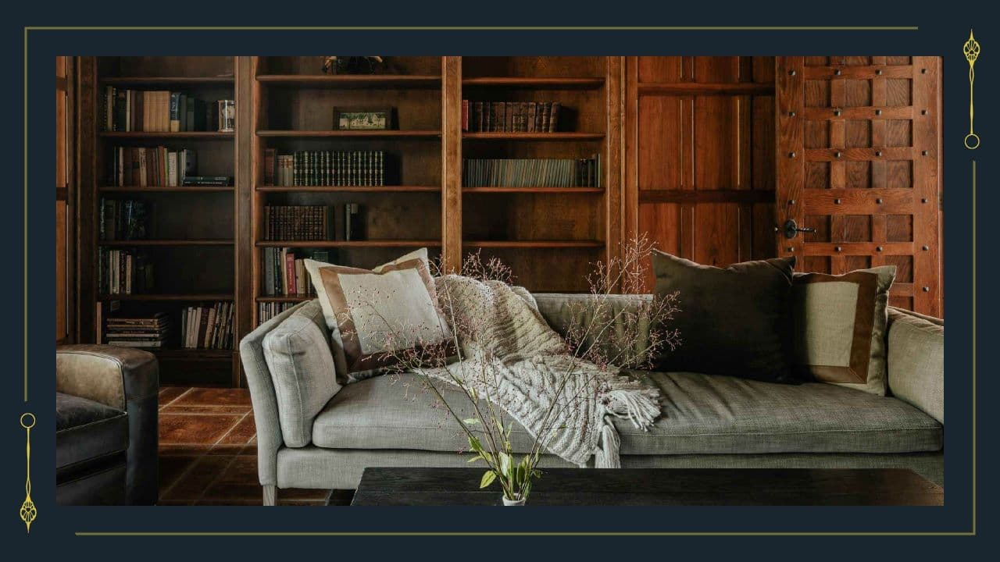

1日の終わり
scene名：0328_1日の終わり
やれることはすべてできたのだろうか。
ここが最後の機会だ。真相を綴るに相応しい結論はでただろうか。思考を巡らせた。
ここが最後の機会だ。真相を綴るに相応しい結論はでただろうか。思考を巡らせた。
「にくもけね」どうしても気になる…
※PLへ
「にくもけね」について、こちらは最後の扉を阻まれたときのエクストラ「謎」となっております。どうしても気になる方向けのヒントへ飛びます。
※ヒント確認後、ここに戻ることは可能です。
>> 【謎のヒントを見る】をクリック
真相を綴る場合
>> 【真相アイコン】をクリック
明日を待つ場合
（事実上、時間切れエンディングへと進む）
>> 〘Next Scene〙をクリック
